PHP versions
Several PHP versions side by side, each with its own php.ini settings and extensions, and each application on the one it needs.


Install versions
The installed PHP versions sit at the top of Settings, and each version's settings and the defaults open in a dialog from that table. The version you installed on the welcome screen is the default until you choose another.
phun list php
phun install php <version>
phun uninstall php <version> # only when nothing uses itWhen Phun ships a newer build of a version you have, such as one that gains an extension, it is offered as an update: phun update php updates every version.
A version per application
Each application picks its own PHP version in its Settings › PHP, and the rest keep theirs. From the terminal:
phun use blog <version> # just blog.test
phun use <version> # the default, used by the terminal's php tooTo run a tool on the version an application uses, use phun exec:
phun exec --site blog composer installSettings and extensions
Set php.ini values for every version at once or for one version, and see each version's extensions:
phun set php memory_limit 512M
phun php ini set <version> xdebug.mode debug
phun php ext list
phun php pool set <version> max_children 8Xdebug
Xdebug comes with Phun. Turn it on for one application with the editor's bug button or phun debug blog on, and Phun listens on port 9003; see debugging in the editor.
PHP in your terminal
phun path install adds Phun's php, composer and friends to your shell's PATH; phun path print shows the snippet without changing any file.